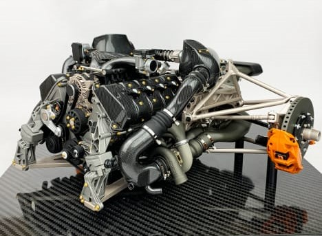
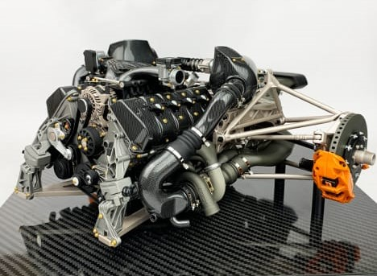

Koenigsegg Jesko Absolut - Specification
Below are some key specifications that highlight the engineering
prowess of the Koenigsegg Jesko Absolut:
- Engine Type: 5.0L twin-turbo V8
- Fuel Type: E85 Biofuel (alternative: standard gasoline)
- Power Output: 1,600 hp (E85), 1,280 hp (gasoline)
- Transmission: 9-speed Light Speed Transmission (LST)
- Torque: 1,500 Nm (1,106 lb-ft)
- Top Speed: Projected 500+ km/h (310 mph)
- Weight: 1,320 kg (2,910 lbs)
- Drag Coefficient: 0.278 Cd
Back to Home
 
